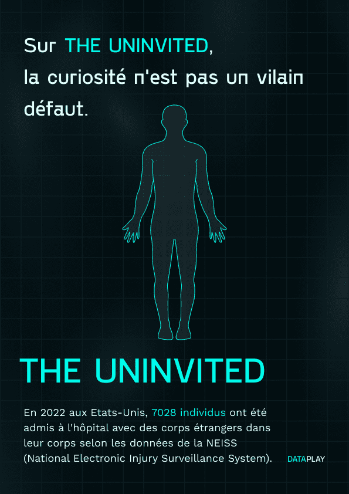
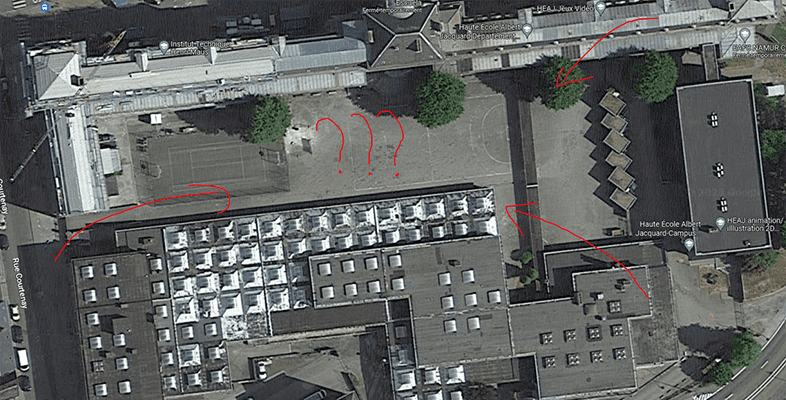

Quel est le point commun entre ces avatars ?
Salutations
Le point commun de ces avatars c’est ce qu’il y a entre la chaise et l’écran, c’est à dire moi, Jessy Allard, étudiant à l’HEAJ en DWT.
Je suis à la recherche d'un stage durant la période de novembre à janvier 2024/25. Je vais commencer par mes points faibles : je ne suis vraiment pas doué avec les photocopieuses et les cafetières. Plus sérieusement, j'envisage ce stage comme une opportunité stimulante d'entrer dans le monde du web.
L'aspect que je préfère lors du développement de projets, c'est la phase de réflexion et de recherche pour l'UI/UX. Maintenir un ensemble cohérent d'éléments graphiques, penser et réfléchir comme les futurs utilisateurs afin d'envisager leurs comportements et mouvements futurs sur le site, etc. Ce sont toutes ces compétences en rapport avec l'UI/UX qui m'animent.
Project
-
Data Dataplay

Objectifs du projet
Le but de cet atelier est de concevoir une expérience de visualisation de données afin d'aider les utilisateurs à interpréter l'ensemble de ces données. La durée de cet atelier est de 3 semaines et il se fait en groupe de 5.
Technologies Utilisées
Défis et solutions
L'un des principaux défis était de rendre les visualisations de données interactives. Pour y répondre, nous avons utilisé la bibliothèque JavaScript Highcharts. Pour obtenir des données propres, nous avons également dû organiser correctement notre Google Sheet afin de la convertir en JSON.
 Site Web -
Tfa Toxicity Checker

Objectifs du projet
Rencontrer une communauté, puis interroger, interviewer, et sonder ces utilisateurs afin d'identifier leurs problèmes et besoins, et proposer une solution.
Technologies Utilisées

Défis et solutions
L'application des méthodes de Design Thinking était une bonne solution pour la phase de préparation et de recherche afin d'identifier les problématiques des utilisateurs. Comme il n'a pas fallu réaliser la solution, mais simplement la présenter, le site se concentre davantage sur l'organisation de contenu, l'interaction et la présentation.
Site Web -
Iolce Iolce
Objectifs du projet
D'après une conférence, il a fallu rédiger des résumés de celle-ci afin de pouvoir donner son avis. Les résumés servent donc à apporter du contexte à quiconque pour mieux comprendre nos avis par la suite. Ce projet consiste donc en l'organisation de contenu, l'interaction et la présentation.
Technologies Utilisées
- HTML, CSS, Javascript
- Conception : Adobe XD
Défis et solutions
C'est le deuxième site que je réalise, et mon défi était d'intégrer des grilles. En montrant comment j'ai créé mes grilles, mon professeur m'a indiqué que je suivais une méthode, celle du 8-point grid. Sans le savoir, j'ai donc appliqué les principes de cette méthode pour mes grilles, et depuis, c'est devenu un automatisme pour moi.
Site Web -
Rux Rethinking User eXperience
Objectifs du projet
Le but de cet atelier est de conceptualiser et de repenser l'usage de la cour intérieure de la Haute École Albert Jacquard en expérimentant des méthodes de Design Thinking.
Technologies Utilisées
Défis et solutions
La mise en pratique des méthodes de Design Thinking était un vrai défi. Nous avons commencé par comprendre nos utilisateurs avec des interviews. Suite à ces interviews, nous avons pu identifier les problèmes grâce à des analyses verticales et horizontales des réponses. Nous avons ensuite procédé au prototypage et à la conception des idées, en les testant par la suite afin de récupérer des feedbacks pour obtenir le meilleur résultat possible.
Site Web
Compétences
Photoshop
Mon sens du design me pousse à passer mes visuels dans Photoshop afin de les modifier pour les faire correspondre à la direction artistique du projet. Et plus encore...
Défis
Durant la confection de mes projets, il m'arrive de me lancer des défis. Par exemple, lors du développement de ce portfolio, je me suis essayé au motion design sur After Effects. Tout en sachant que je débute sur ce logiciel, c'est avec ce genre d'initiative qu'on développe de nouvelles compétences. En plus, on évite de stagner uniquement dans ce qu'on sait faire.
Plus qu'un défi, ça peut s'avérer être une solution. Comme par exemple le visuel 3D de mon projet Rux que j'ai réalisé dans Minecraft. En plus d'une superbe vision de mon projet à travers une vidéo, Minecraft offre la possibilité aux utilisateurs de partager leurs maps, ce qui permet à tout le monde d'aller voir de leurs propres yeux le résultat de mon projet.
Ia
J'en utilise généralement pour tout, surtout dès que ça me fait gagner du temps, mais il faut quand même savoir rester raisonnable. Par exemple, si j'avais utilisé ChatGPT pour rédiger le contenu de mon portfolio, ça aurait clairement manqué de personnalité, et d'authenticité.
Conclusion
Je suis passionné par le design UI/UX et le développement Front-end, et j'ai vraiment envie d'apprendre dans les meilleures conditions. En tant que stagiaire, je convaincu que je peux apporter des idées nouvelles, des réflexions intéressantes, des questions pertinentes, et des solutions créatives et inspirantes. Mon but, c'est de vraiment m'impliquer dans votre équipe, tout en développant mes compétences et en gagnant une expérience précieuse.